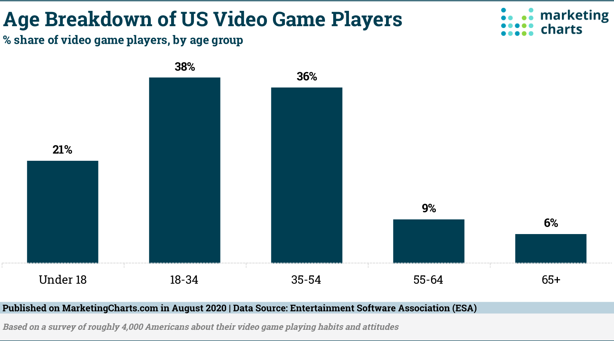

1. More Than 214 Million people in the United States play video games one hour or more per week. Also 75% of all U.S. households have at least one person who plays video games. Did you know that 64% of U.S. adults and 70% of those under 18 regularly play video games?
2. Did you know that Puzzle and strategy games are the most popular genres among people who play video games?
3. A quarter of teens (26%) believe they spend too much time playing video games, while a similar share (22%) feels they spend too little time doing so.

4. A majority of adults – especially seniors – believe video games are a contributing factor to gun violence.
5. An overwhelming 92% of teen boys have access to a game console than 75% of girls. And 97% of teen boys play video games on some kind of device, compared with 83% of girls.
6. As of 2020, there are more gamers than there have ever been. An estimated 2.7 billion people played video games in 2020, most likely due to the Covid-19 Pandemic keeping many people inside locked up.
7. Did you know that the League Of Legends, an online computer game created by Riot Games, hosts its own world competition that has drawn more viewers than the Superbowl or the NBA Finals? Crazy how a computer game can pass these high viewership numbers.
8. Fun Fact: Universal Studios teamed up with the game company, Nintendo, to create Mario themed lands in the Uniersal Theme parks. The one in Japan is already built while the other two in America are still in consturction.